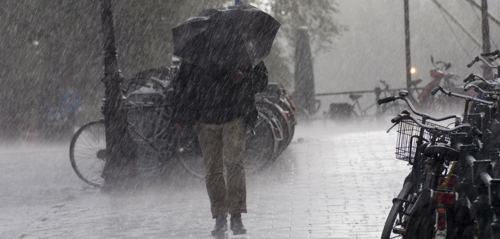
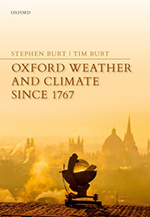

<!DOCTYPE html>
<html>
    <head>
        <title>University of Oxford</title>
        <link rel="stylesheet" type="text/css" href="tampilan oxford.css">
        <meta name="viewport" content="width=device-width, initial-scale=1">
    </head>
</html>

<body bgcolor="white">
    <header>
        <div class="uni"></div>
        <div class="homepage">NEWS 1</div>
    </header>


    <nav>
        <div class="menu-bar">
        <ul>
          <li><a href="index.html">Homepage</a></li>
          <li id="menu-products">
            <button onclick="myFunction()" class="dropbtn">About ▼</button>
            <ul id="dropdown-products">
                <div id="myDropdown" class="dropdown-content">
              <li><a href="OrganisationsOxClar.html">Organisation</a></li>
              <li><a href="牛津大学Clar.html">牛津大学</a></li>
              <li><a href="InternationalOxfordClar.html">International Oxford</a></li>
            </div>
            </ul>
          </li>
          <li><a href="ResearchClar.html">Research</a></li>
        </ul>
        </div>
      </nav>


    <script>
        function myFunction() {
            document.getElementById("myDropdown").classList.toggle("show");
        }

        window.onclick = function(event) {
  if (!event.target.matches('.dropbtn')) {
    var dropdowns = document.getElementsByClassName("dropdown-content");
    var i;
    for (i = 0; i < dropdowns.length; i++) {
      var openDropdown = dropdowns[i];
      if (openDropdown.classList.contains('show')) {
        openDropdown.classList.remove('show');
      }
    }
  }
}
    </script>
<div class="el"></div>
<div id="">
<div class="org">Oxford Researchers Record the Wettest Month in 250 Years</div>
<div class="naur">Oxford University researchers have recorded the wettest month in Oxford in 250 years at the Radcliffe Meteorological Station. Data from the station this week confirmed that September 2024 saw an extraordinary 193.3 mm of rainfall, making it Oxford’s wettest month since 1774 and the second wettest of any month since rainfall records began in 1767.</div>
<div class="line"></div>
<div class="nose">Charlie Knight, current doctoral researcher and Radcliffe Meteorological Observer, remarked, 'this exceptional amount of rainfall is particularly unusual given that September is typically not a very wet month, averaging 52 mm of rain. Only about one year in ten is it the wettest month of the year. So this month’s rainfall, which is 374% of what we’d normally expect, is remarkable. And even more so when you consider that most of the month’s rain fell across just two days.</div>

<div class="nose">The majority of the month’s rain fell on 22 September (77.1 mm 09-09h) and 23 September (41.8 mm 09-09h), which combined is the highest two-day total in the station’s history. Nearby Environmental Agency (EA) gauges support the Radcliffe rainfall totals, with one gauge at Osney Lock recording 101.1 mm in just under 23 hours on 23 September. The Radcliffe Meteorological Station, managed by the School of Geography and the Environment at the University of Oxford, holds the longest series of temperature and rainfall records for one site in Britain.</div>

<div class="nose">Monthly rainfall records extend to 1767, while daily records extend back to December 1813 for air temperature, January 1827 for rainfall, and February 1880 for sunshine hours. Such long-term weather records are invaluable for climate research. They provide a vital link between modern weather data and those of the 18th and 19th centuries, allowing researchers to assess how today’s weather fits into historical patterns and how the climate is evolving, especially in light of global warming.</div>

<div class="nose">The School of Geography and the Environment (SoGE) maintains the Radcliffe Meteorological Station on behalf of the University of Oxford. The site is situated off Woodstock Road in the garden of Green Templeton College, adjacent to the Radcliffe Observatory building.</div>

<div class="nose">Meteorological records commenced here in 1772; an unbroken daily air temperature record exists from November 1813, daily rainfall from January 1827 and sunshine from February 1880. These are the longest single-site weather records in the United Kingdom, and amongst the longest in the world. They are especially valuable because the instruments in use and their exposure have been fully documented throughout the record.</div>

<div class="nose">As society’s concern about climatic change increases, the daily observations of Oxford weather which continue to be made at the Radcliffe Meteorological Station provide a near-unique reference with which to assess trends in temperature and rainfall over two centuries and more. The School of Geography and the Environment attaches great importance to maintaining this valuable meteorological record.</div>
</div>

<div id="grrah">
    <div class="then">Over 200 years of weather records</div>
    <div class="wow">In 2015, the Royal Meteorological Society held a meeting at the School to celebrate 200 years of weather records at the Radcliffe Meteorological Station. Following this meeting, two of the speakers Stephen Burt and Tim Burt began work on the book <a href="OxfordBook.html">Oxford Weather and Climate since 1767</a> which was published by Oxford University Press in May 2019.</div>
    <div class="ugh">The book documents and analyses the entire Radcliffe record for the first time, including data up to the close of 2018: Appendix 6 includes tables of monthly and annual summaries of Oxford’s weather by year from 1813.</div>
    <div class="i"> The majority of the month’s Burt, Stephen and Burt, Tim, 2019. Oxford Weather and Climate since 1767. Oxford University Press, 544pp.

    </div>
    

<footer>
    <div class="rama">CONNECT WITH US</div>
    <div class="mam">
        <a href="https://www.youtube.com/@oxforduniversity"></a></div>
    <div class="mam">
        <a href="https://www.instagram.com/oxford_uni/"></a></div>
    <p>&copy; 2024 - University of Oxford</p>
</footer>

